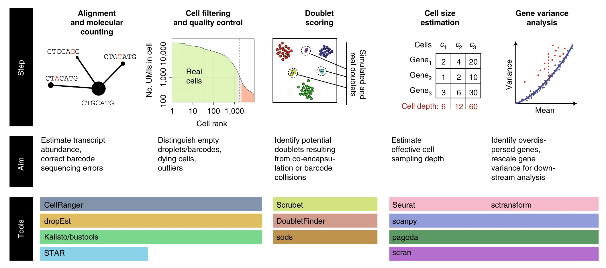

Chapter 2 SingleCell
2.1 Review-2021-06
The triumphs and limitations of computational methods for scRNA-seq(Kharchenko 2021)
Though computational approaches vary, most formulate (1) a statistical model of the measurement, (2) a representation of the data in reduced dimensions, and (3) an approximation of the expression manifold (Box 2), with a set of discrete transcriptional subpopulations being the simplest and the most common approximation. The problems motivating these steps, and the specific solutions and their assumptions, are the subject of this review.
 Key preprocessing steps in single-cell RNA-seq analysis
Key analysis steps in single-cell RNA-seq analysis
Key analysis steps in single-cell RNA-seq analysis
Box 1 Select software tools Tools for alignment, barcode correction, count matrix estimation, and quality control include:
CellRanger (https://support.10xgenomics.com/single-cell-gene-expression/software/pipelines/latest/installation): supports 10x Chromium datasets (commercial product)
dropEst (https://github.com/hms-dbmi/dropEst): supports multiple droplet-based protocols
STAR (https://github.com/alexdobin/STAR): aligner (used internally by CellRanger and dropEst), also has built-in options for count matrix estimation
Optimus (https://data.humancellatlas.org/pipelines/optimus-workflow): supports 10x Chromium v2 and v3 datasets, designed for Human Cell Atlas
Kallisto/bustools (https://www.kallistobus.tools): fast processing using pseudoalignment
Cell filter and doublet identification tools include:
EmptyDrops (https://rdrr.io/github/MarioniLab/DropletUtils/man/emptyDrops.html): uses a classifier to distinguish ‘empty’ cells that look like the low-end tail of the cell size distribution
Scrublet (https://github.com/AllonKleinLab/scrublet): python-based, doublet simulation and doublet scoring
doubletFinder (https://github.com/chris-mcginnis-ucsf/DoubletFinder): R-based, doublet simulation and doublet scoring
scds (https://github.com/kostkalab/scds): fast doublet scoring implementation
Tools for normalization, dimensionality reduction, and clustering and differential expression include:
Seurat (https://satijalab.org/seurat/): the most popular analysis toolkit, R-based
scanpy (https://github.com/theislab/scanpy): the most popular python-based toolkit
scVI (https://github.com/YosefLab/scVI): latent space identification using variational neural net
pagoda2 (https://github.com/hms-dbmi/pagoda2): fast, R-based processing
SAUCIE (https://www.krishnaswamylab.org/projects/saucie): a neural-net-based dimensionality reduction, using maximal mean discrepancy penalty
Tools for trajectory fitting include:
Monocle3 (https://cole-trapnell-lab.github.io/monocle3/): third iteration of the Monocle package, including updated tree utilities
Slingshot (https://github.com/kstreet13/slingshot): tree fitting with improved pseudotime estimation
PAGA (https://github.com/theislab/paga): tree/graph fitting approach combined with cell aggregation, also supports cluster-based velocity estimates
Wishbone (https://dpeerlab.github.io/dpeerlab-website/wishbone.html): a bifurcation analysis method
Destiny, DPT (https://github.com/theislab/destiny/): dimensionality reduction and trajectory fitting using diffusion maps82
Tools for velocity estimation include:
velocyto (http://velocyto.org/): reference python/R implementation
scVelo (https://scvelo.readthedocs.io/): new implementation using curve-based phase portrait fit
2.1.1 Statistical view of a cell
2.1.2 Comparing transcriptional states
2.1.3 The quest for reduced dimensions
2.1.4

scRNA-seq basics
a, Beating Moore’s law. The number of cells measured by landmark scRNA-seq datasets over years (red), compared with the increase in the CPU transistor counts (black). The set of all published scRNA-seq studies83 is shown with small red dots. The estimated number of cells in a human body is shown by a green dashed line. b, Shallow coverage of each cell can be compensated for by measuring more cells. The ability to distinguish two cell populations, assessed by the area under the receiver operating characteristic curve (ROC AUC) measure, is shown as a function of the number of measured cells (x axis) and the mean cell depth (y axis). Examples of three different simulations (1-3) within different parts of this design parameter space are shown on PCA projections. c, Probabilistic view of scRNA-seq estimates. Posterior probability of IL32 gene expression magnitude is shown for five cells from two different CD8+ T cell populations (red and blue, thin lines). Joint posteriors assessing the mean expression magnitude within each subpopulation are shown by thick dashed lines. d, Comparing CD4+ T cells and CD14+ monocytes, the plot shows the number (y axis, left) and the fraction (y axis, right) of the genes passing a 1% statistical significance threshold for differential expression (DE) as a function of the number of cells compared from each population (x axis). e, The scatter plot shows for each gene (dots) the mean (x axis) and variance (y axis) of the normalized UMI counts (CPM, counts per million) in CD4+ T cells. The Poisson expected value is shown in green, with a quadratic-based negative binomial fit shown in red. f-i, Variance normalization and most variable genes. f, A t-SNE embedding of a primary peripheral blood mononuclear cell (PBMC) dataset with cell annotations. NK, natural killer, separated into CD56 bright and dim subsets. pDC, plasmacytoid dendritic cell. g, Mean-variance relationship of different genes (dots) in the PBMC dataset is shown for log-transformed expression estimates. The genome-wide relationship, as captured by smoothed regression, is shown by the blue line. Genes whose variance is significantly higher than the genome-wide trend are shown as red dots. h, Residual variance is shown for the top 5,000 overdispersed genes, ordered by the statistical significance (x axis). i, Expression pattern of several example genes, with circles highlighting the subpopulations distinguished by the genes. j, Distribution of normalized expression magnitudes (CPM) for the CTSH gene across all CD14+ monocytes is shown on the linear scale (top) and after log transformation (bottom) with a pseudocount.
2.2 Data processing
Bayesian inference of gene expression states from single-cell RNA-seq data(Breda, Zavolan, and Nimwegen 2021)
summary of sanity approach
sanity notes
2.3 clustering
2.4 singlecell analysis
References
Breda, Jérémie, Mihaela Zavolan, and Erik van Nimwegen. 2021. “Bayesian Inference of Gene Expression States from Single-Cell Rna-Seq Data.” Nature Biotechnology, 1–9. https://www.nature.com/articles/s41587-021-00875-x.
Kharchenko, Peter V. 2021. “The Triumphs and Limitations of Computational Methods for scRNA-Seq.” Nature Methods, 1–10.